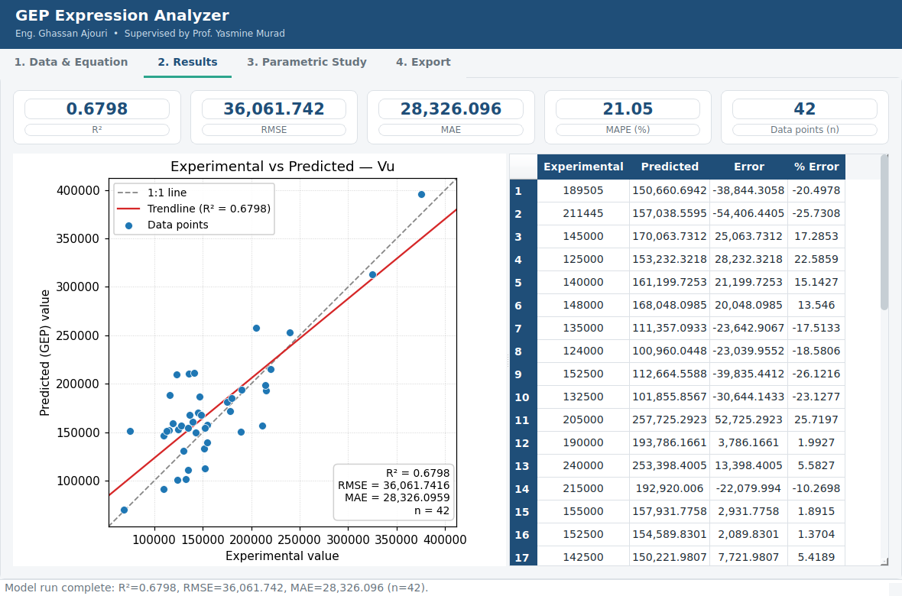
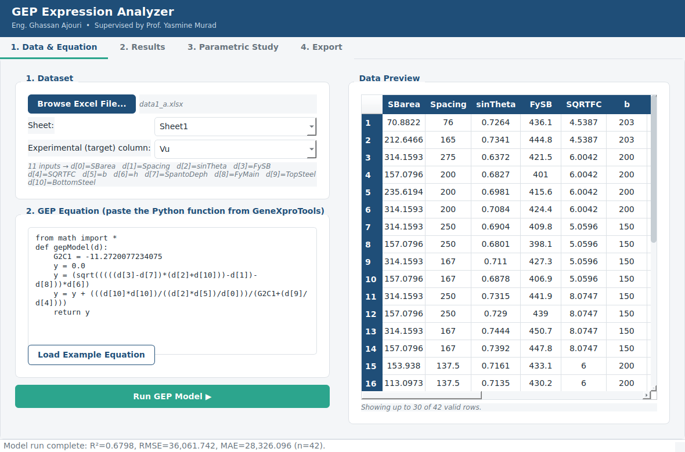

Paste the equation GeneXproTools gives you, point it at your dataset, and get R², RMSE, MAE, a validation chart, and a full parametric study — plus a live-formula Excel report you can hand in or hand off.

One workflow, from raw spreadsheet to a report you can submit.
Point it at your Excel file. Input columns and the experimental target are detected automatically — override either from a dropdown.
Drop in the Python function GeneXproTools exports. It runs safely, sandboxed, with no file or system access.
Experimental vs predicted chart, trendline, and R² / RMSE / MAE / MAPE — the R² on the chart always matches the number in the panel.
Every input swept from min to max while the rest hold at their mean — view all parameters at once, or drill into one at a time.
The Excel report writes real formulas, not static numbers — open it and every cell still recalculates, including the parametric sheets.
Equations run in a restricted sandbox — no imports beyond math, no filesystem or network access, ever.
From loading data to exporting the report, without leaving the app.

Load your Excel file and paste the GEP equation. Inputs and the experimental column are detected automatically.
Select the Excel file with your experimental dataset.
Copy the Python function GeneXproTools gave you.
One click computes predictions and every statistic.
Check the fit chart and the full parametric study.
Get a live-formula Excel workbook to submit or share.
A full walkthrough of the tool, from loading data to exporting your report.
Free for students and researchers. Runs on Windows — install it, point it at your data, and you're validating models in under a minute.